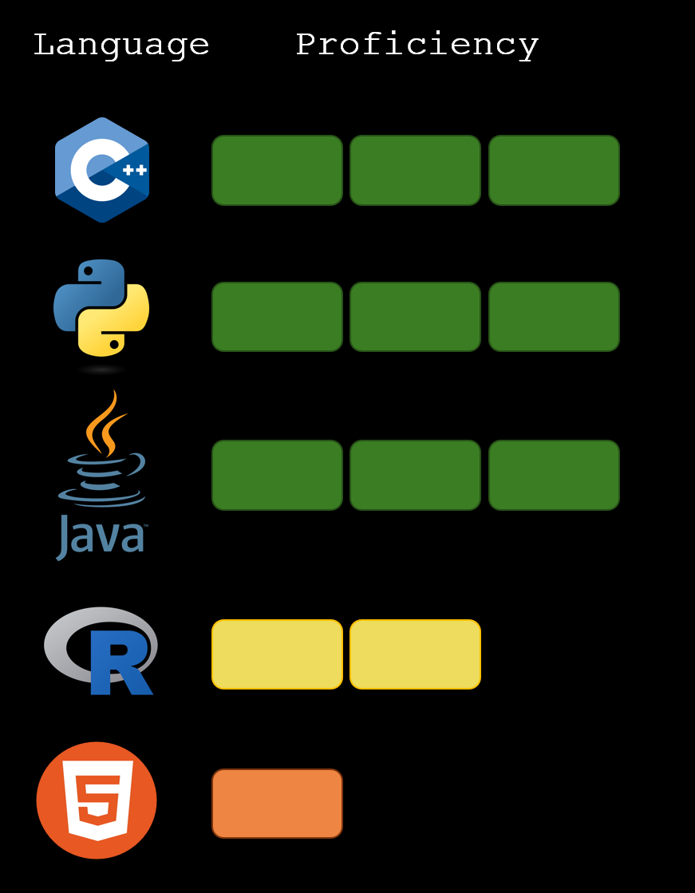

Education
University of Washington
- Bachelor of Science, Biochemistry, Departmental Honors
- Minor in Applied Math
- June 2023

University of California, Berkeley
- Master of Molecular Science and Software Engineering
- May 2024
Relevant Experience
Merck
Berkeley, CA
Capstone Project January 2024 – Current
- Fine-tuned an LLM for analysis of scientific articles with PyTorch using Gemma as the base model
- Automated data scraping, cleaned data, calculated performance metrics of the model
UC Berkeley Department of Integrative Biology
Berkeley, CA
Graduate Student Instructor Sep 2023 – Current
- Led lab sessions of 32 students, presenting to students and guiding them through concepts in Integrative Biology
- Graded assignments and exams, and helped in the creation of new assessments
- Held office hours and provided additional support to students of different skill levels
Chavkin Lab – UW Pharmacology
Seattle, WA
Research Intern June 2021 – January 2023
- Researched in vitro intracellular signaling for various peripherally restricted drugs
- Plated and transfected cells, imaged cells under a fluorescent microscope, performed data analysis, and prepared drug and buffer solutions
- Provided over 104 pieces of data for a paper that is soon to be published
- Presented at UW Undergraduate Research Symposium 2022
NIDA Summer Internship – Harvard Medical School
Belmont, MA
Research Intern June 2022 – August 2022
- Trained one-on-one by the director of Psychiatric Neurogenomics at McLean Hospital, Dr. Carl Lin
- Researched genetic risk factors for cocaine addiction
- Conducted luciferase and protein assays, plasmid isolation, DNA purification, and PCR
- Presented at the 2022 NIDA Summer Research Internship Program Project Showcase
UW Paul G. Allen School of Computer Science & Engineering
Seattle, WA
Head Teaching Assistant June 2023 – Sep 2023
- Held weekly teaching sessions, guest lectured in topics of Data Structures and Algorithms
- Lead a subcommittee of three other teaching assistants
- Graded assignments and exams, providing in-depth feedback on Java code
- Coordinated with the instructor to provide feedback and suggestions for improving the course content
Skills
Languages: Python, C++, Java, R, Matlab, Machine Learning Techniques (PyTorch and scikit-learn), HTML
Developer Tools: Git, VS Code, Eclipse, Jupyter Notebooks
ML Models: Llama2, Gemma
Projects
Peptide Digest
For my capstone project of my Masters Degree, I partnered with Merck to reimage in the process of finding and reading scientific articles. I, along with a team of two other students, fine-tuned an LLM and created a front-end web-app that summarized articles, scraped their metadata, and provided a relevance score for users. I worked with the Gemma Model and applied Low-Rank Adapters (LoRA) to the model using the Performance Enhancement for Training (PEFT) library. The fine-tuning process was then initiated with predefined training arguments, incorporating qLora and the Supervised Fine-Tuning Trainer (SFTTrainer). You can read my final project report
here. Or you can take a look at our github repository:
hereSentiment Analysis Prediction
This project aims to understand how people's feelings in Amazon reviews have changed over time and create computer programs that can predict those feelings. We looked at a large set of Amazon reviews from 1996 to 2014 and used a VADER sentiment analysis to understand if the reviews were positive or negative. Then we built different models, using linear regression techniques, to estimate how people would feel based on things like the year the review was written, the length of the review, and whether the reviewer was verified. Results suggest success in tracking sentiment trends and emphasize the importance of sentiment analysis in understanding consumer feedback nuances. Look at the github repository
here, or access the final report
here.
Parallelization of a Particle Simulation
This project takes a naive implementation of a particle simulation and parallelizes it using MPI. We were successful in significantly improving the code performance. Additionally this project was done through Perlmutter, a supercomputer at the National Energy Research Supercomputing Center in Berkeley. You can see our results and explanation of our implementation in
this project report.UW Neurobiology Club
Seattle, WA
Fundraising Officer Sep 2021 – June 2023
- Planned, advertised and ran fundraising events, partnered with two local businesses
- Lead a committee of four students to help increase engagement and support fundraising endeavors